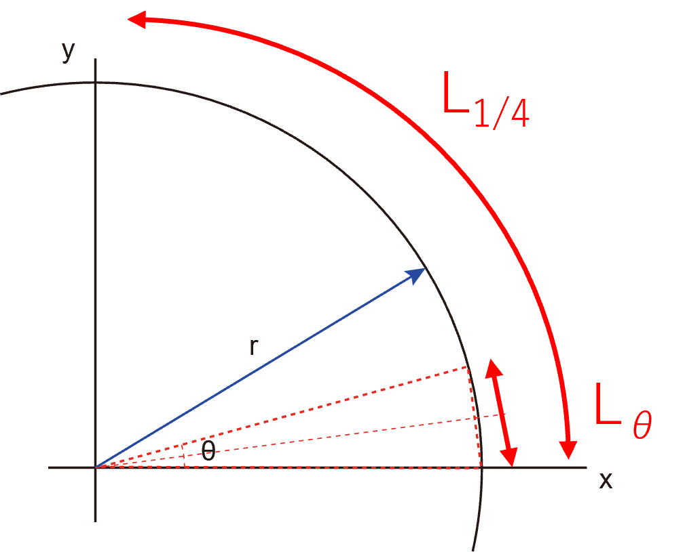

円周・円の面積の求め方，楕円の面積の求め方
円の円周，面積を考えていきます．
・円周
まずは円周，2πｒ，から．

半径ｒの円を考えていきます．ここでは簡単に1/4円を考えていきます．このL1/4を求めていきます．
図のような二等辺三角形，頂角がθ，側辺の長さがｒ，を考えていきます．
この二等辺三角形は，直角三角形が二つ合わさったものであるので，底辺の長さLは，
\( \Large \displaystyle L_{ \theta}=2 \cdot r \cdot sin \frac{ \theta}{2} = 2 \cdot r \cdot sin \frac{ \theta}{2} \)
1/4円にこの三角形が，
\( \Large \displaystyle \frac{ \pi / 2}{ \theta} \)
個あるので，
\( \Large \displaystyle L_{ 1/4}= 2 \cdot r \cdot sin \frac{ \theta}{2} \cdot \frac{ \pi / 2}{ \theta} \)
このθをどんどん小さくしていった結果が円周となるので，
\( \Large \displaystyle L_{ 1/4}= \lim_{ \theta \to 0 } \left[ 2 \cdot r \cdot sin \frac{ \theta}{2} \cdot \frac{ \pi / 2}{ \theta} \right]\)
を計算すればいいことになります．ここで，θ/2=ｘ．とすると極限は変わらないので，
\( \Large \displaystyle L_{ 1/4}= \lim_{ x \to 0 } \left[ 2 \cdot r \cdot sin \ x \cdot \frac{ \pi / 2}{ 2x} \right]
=
\lim_{ x \to 0 } \left[ \frac{ \pi r}{2} \cdot \frac{sin \ x}{ x} \right]
=
\frac{ \pi r}{2} \lim_{ x \to 0 } \frac{sin \ x}{ x} \)
この極限は，ここ，で記したように，１，となるので，
\( \Large \displaystyle L_{ 1/4}= \frac{ \pi r}{2} \)
\( \Large \displaystyle L=2 \pi r \)
と公式を導き出すことができました．
・円の面積
同様の考え方で，図の二等辺三角形の面積は，
\( \Large \displaystyle S_{ \theta}=\frac{1}{2} \cdot 2 \cdot r \cdot cos \frac{ \theta}{2} \cdot r \cdot sin \frac{ \theta}{2} = r^2 \cdot cos \frac{ \theta}{2} \cdot sin \frac{ \theta}{2} \)
1/4円にこの三角形が，
\( \Large \displaystyle \frac{ \pi / 2}{ \theta} \)
個あるので，
\( \Large \displaystyle S_{ 1/4}= r^2 \cdot cos \frac{ \theta}{2} \cdot sin \frac{ \theta}{2} \cdot \frac{ \pi / 2}{ \theta} \)
このθをどんどん小さくしていった結果が円周となるので，
\( \Large \displaystyle S_{ 1/4}= \lim_{ \theta \to 0 } \left[ r^2 \cdot cos \frac{ \theta}{2} \cdot sin \frac{ \theta}{2} \cdot \frac{ \pi / 2}{ \theta} \right]\)
を計算すればいいことになります．ここで，θ/2=ｘ．とすると極限は変わらないので，
\( \Large \displaystyle S_{ 1/4}= \lim_{ x \to 0 } \left[ r^2 \cdot \frac{cos \ x \cdot sin \ x}{x} \cdot \frac{ \pi}{ 4} \right] \)
\( \Large \displaystyle= \frac{ \pi r^2}{ 4} \lim_{ x \to 0 } \left[ \frac{cos \ x \cdot sin \ x}{x} \right] \)
\( \Large \displaystyle= \frac{ \pi r^2}{ 4} \lim_{ x \to 0 } cos \ x \ \lim_{ x \to 0 } \frac{sin \ x}{x} \)
cos xの極限は１となり，次の極限は，ここ，で記したように，１，となるので，
\( \Large \displaystyle S_{ 1/4}= \frac{ \pi r^2}{4} \)
\( \Large \displaystyle S=\pi r^2 \)
と公式を導き出すことができました．
次ページに，別の方法の解説をします．